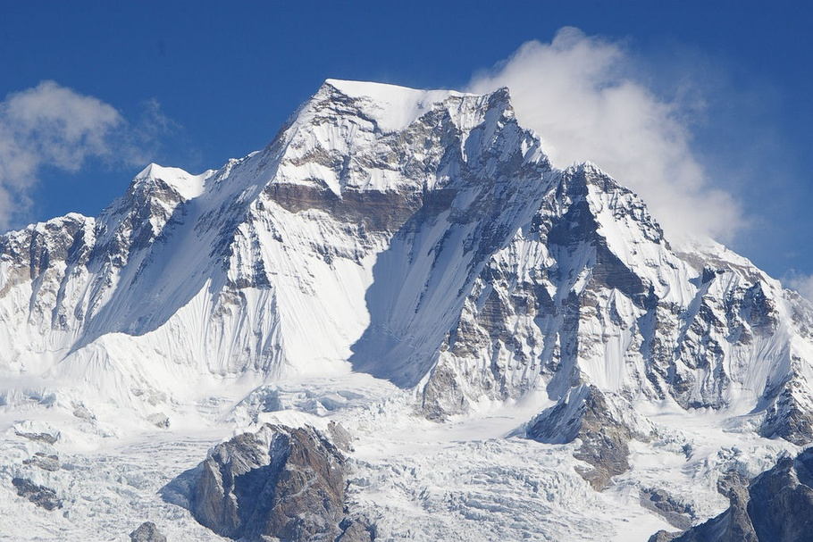
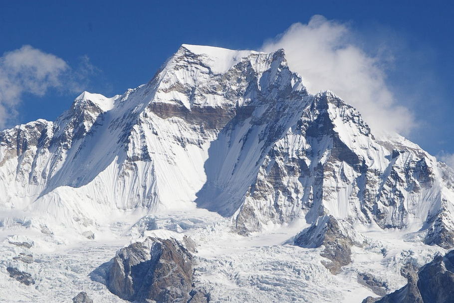

GYACHUNG KANG
A pristine trekking circuit which allows you to circle Mt. Gyachung,word's 15th highest peak.
Gyachung Kang (Nepali: ग्याचुङ्काङ, Gyāchung Kāng; Chinese: 格重康峰; pinyin: Gézhòngkāng Fēng) is a mountain in the Mahalangur Himal section of the Himalaya, and is the highest peak between Cho Oyu (8,201 m) and Mount Everest (8,848 m). It lies on the border between Nepal and China. As the fifteenth-highest peak in the world, it is also the highest peak that is not eight thousand metres tall; hence it is far less well-known than the lowest of the eight-thousanders, which are only about 100 m (328 ft) higher. The peak's lack of significant prominence (700 m) also contributes to its relative obscurity.
 The mountain was first climbed on April 10, 1964 by Y. Kato, K. Sakaizawa and Pasang Phutar and on the next day by K. Machida and K. Yasuhisa. The north face was first climbed in 1999 by a Slovene expedition and was repeated by Yasushi Yamanoi in 2002.
 The mountain was first climbed on April 10, 1964 by Y. Kato, K. Sakaizawa and Pasang Phutar and on the next day by K. Machida and K. Yasuhisa. The north face was first climbed in 1999 by a Slovene expedition and was repeated by Yasushi Yamanoi in 2002.